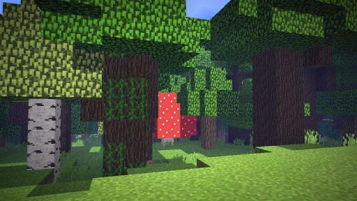
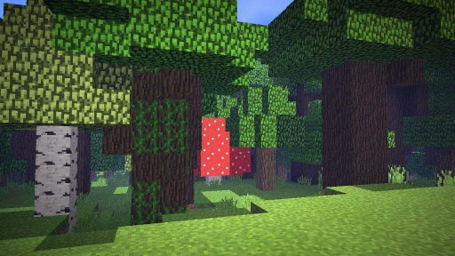

As florestas estão desaparecendo em um ritmo alarmante
10 milhões de hectares são perdidos anualmente devido ao desmatamento. É hora de agir!
Sobre o Desmatamento
O desmatamento refere-se à remoção permanente de florestas para dar lugar a outros usos da terra, como agricultura, pecuária ou urbanização. Nos últimos 50 anos, perdemos cerca de 17% da cobertura florestal da Amazônia, o equivalente a 700.000 km².
 

Principais Causas do Desmatamento
Agricultura Comercial
Responsável por cerca de 40% do desmatamento global, principalmente para cultivo de soja, óleo de palma e criação de gado.
Exploração Madeireira
A extração ilegal de madeira continua sendo um problema grave em muitas regiões florestais.
Expansão Urbana
O crescimento das cidades e infraestrutura consome áreas florestais cada vez maiores.
Mineração
Atividades mineradoras frequentemente levam à destruição de grandes áreas florestais.
Impactos do Desmatamento
15%
das emissões globais de gases de efeito estufa vêm do desmatamento
137
espécies de plantas e animais são extintas diariamente devido à perda de habitat
25%
das florestas tropicais foram destruídas nos últimos 50 anos
Mudanças Climáticas
As florestas absorvem dióxido de carbono - sem elas, mais CO2 permanece na atmosfera, acelerando o aquecimento global.
Perda de Biodiversidade
70% de todas as espécies terrestres vivem em florestas. O desmatamento destrói seus habitats.
Desertificação
Sem as raízes das árvores para manter o solo, áreas desmatadas podem se transformar em desertos.
Impactos nas Comunidades Locais
Milhões de pessoas dependem das florestas para seu sustento e cultura tradicional.
Soluções e Ações
Conservação e Restauração
Proteger áreas florestais existentes e restaurar ecossistemas degradados pode recuperar até 20% da cobertura florestal perdida.
Agricultura Sustentável
Práticas como agrofloresta e cultivo em terra já desmatada reduzem a pressão sobre novas áreas.
Consumo Consciente
Optar por produtos com certificação de origem sustentável e reduzir o consumo de carne ajuda a diminuir a demanda por áreas desmatadas.
Políticas Públicas
Governos precisam fortalecer leis ambientais e incentivar práticas sustentáveis.